Action chunking—predicting and executing multiple future actions instead of a single action—has proven to be a critical component for learning effective robotic control policies. However, our precise understanding of why action chunking improves performance has remained limited. In this work we seek to close this gap. Through rigorous experimental evaluations, we first show that, while existing hypotheses for the success of action chunking—in particular non-Markovian expressivity, horizon reduction, and representation learning—can each partially explain the success of action chunking, in many settings of interest delayed policies, which at each step predict a single action based on the state \(k\) steps in the past, can match or exceed the performance of action chunking, fully accounting for the benefits of these hypotheses. We then show that there exists an additional benefit of action chunking not accounted for previously that we refer to as implicit ensembling. In particular, by learning a diversity of temporal relationships (that is, \(a_t \mid o_t\), \(a_t \mid o_{t-1}\), \(\ldots\)), action-chunked policies exhibit behavior matching that of a model ensemble, increasing their robustness and generalization ability over policies that only learn a single temporal relationship. Motivated by these findings, we propose a policy class that amplifies this effect of action chunking by explicitly instantiating an ensemble, and which we show significantly improves over the performance of action chunking in many domains.
Section 0
Section 1
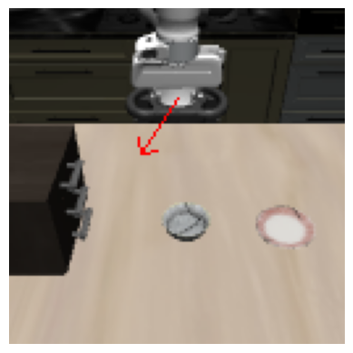
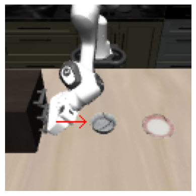
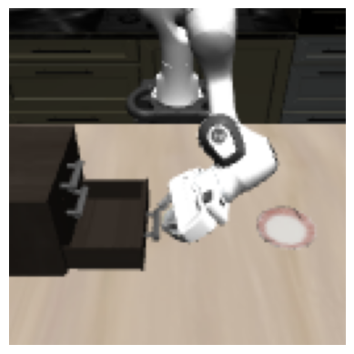
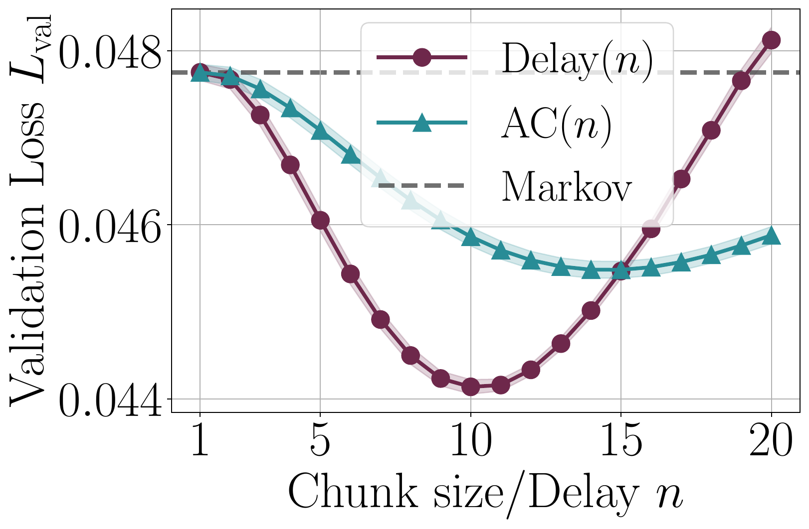
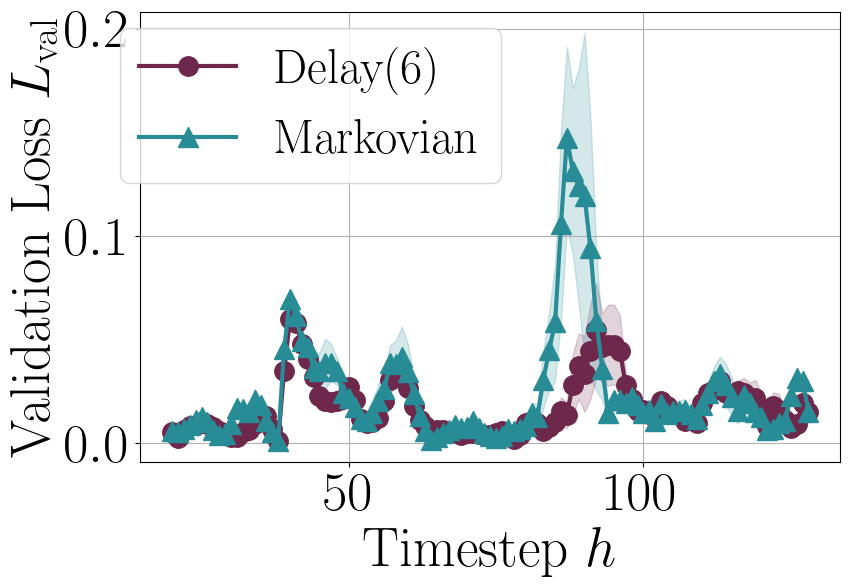
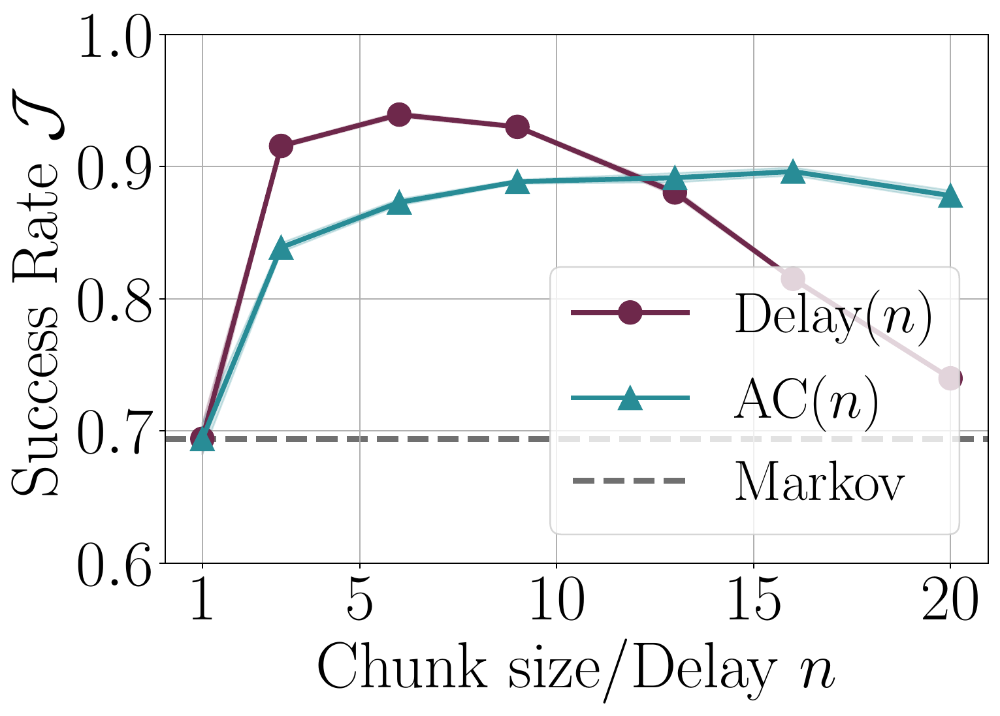
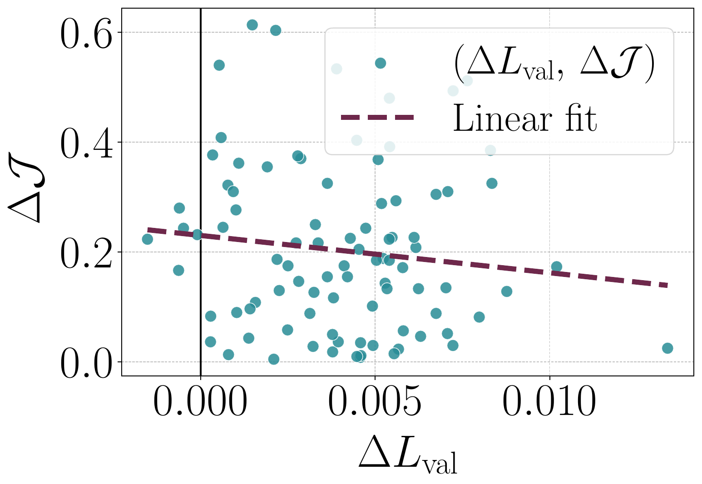
Takeaway 1
Section 2
Theoretical result
There exists a deterministic environment with horizon $H$, a Markov demonstrator $\pi_{\mathrm{demo}}$, and a Markov policy $\hat{\pi}$ with generalization error $\epsilon$, such that $\mathcal{J}(\pi_{\mathrm{demo}})\ge \mathcal{J}(\hat{\pi})+\Omega(2^H \epsilon)$.
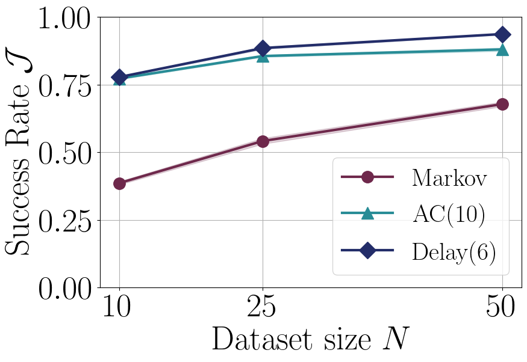
Theoretical result
Suppose that the generalization error of each action chunk component/delayed policy is no larger than that of a Markovian learner, and is bounded by $\epsilon$. Then both the action-chunked and delayed policies satisfy $\mathcal{J}(\pi_{\rm demo})-\mathcal{J}(\hat\pi^k_n),\; \mathcal{J}(\pi_{\rm demo})-\mathcal{J}(\pi_{\rm delay}^k[\hat\pi_n]) \le \mathcal{O}((k+1)^{H/k}\epsilon)$, where $k$ is the chunk size/delay.
Takeaway 2
Section 4
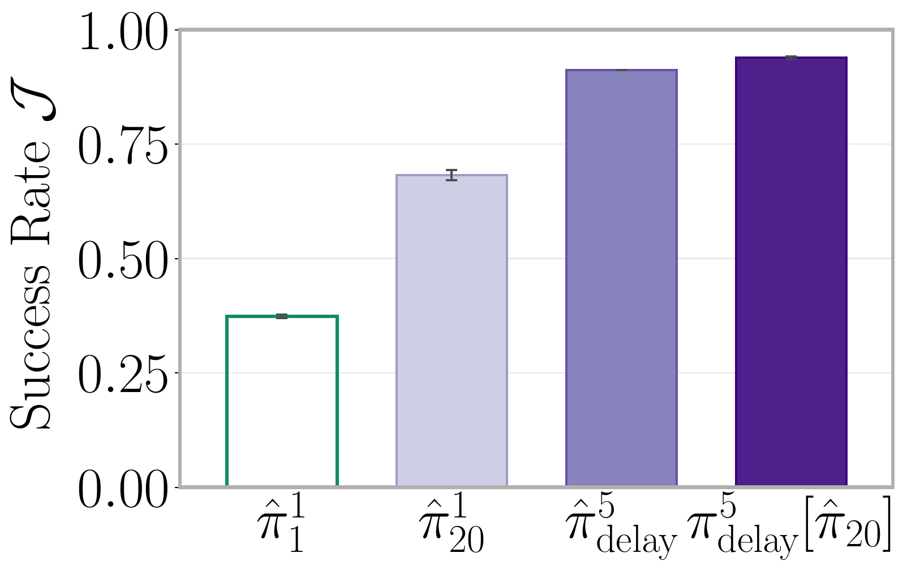
Takeaway 3
Section 5
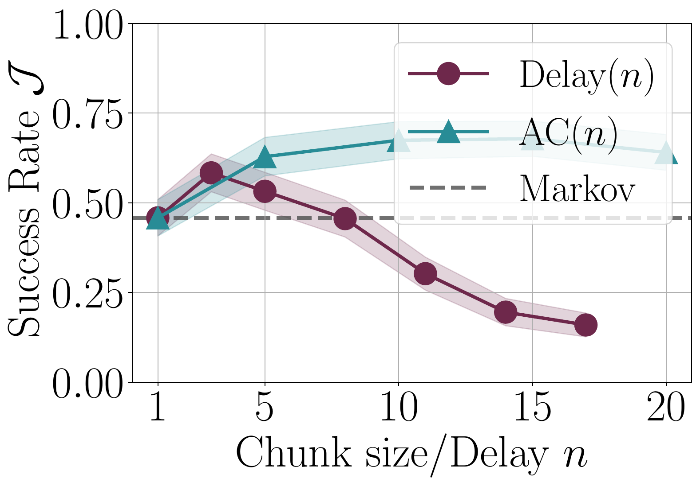
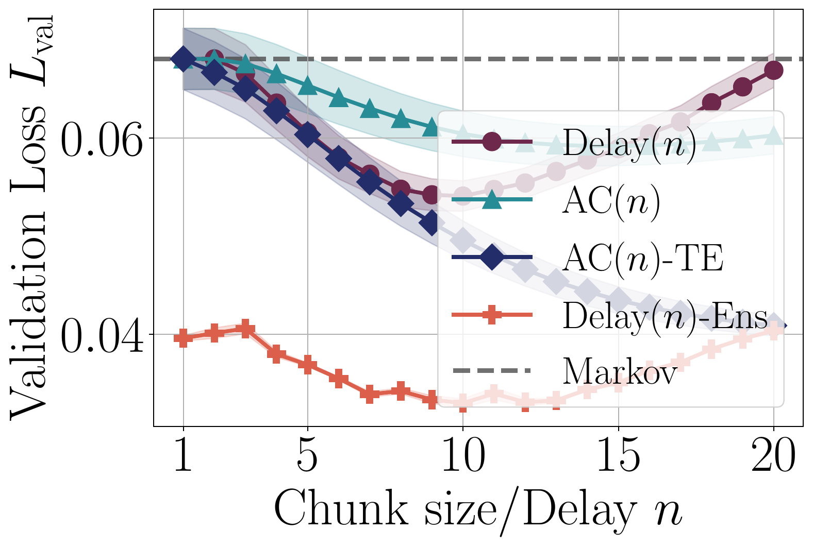
| Task | Markovian | AC$(n)$ | Delay$(n)$ | AC$(n)$-RDE | AC$(n)$-TE | AC$(n)$-Ens | Delay$(n)$-Ens |
|---|---|---|---|---|---|---|---|
| Libero-90 | 68.9 \(\pm 0.6\) | 89.2 \(\pm 0.2\) | 94.0 \(\pm 0.1\) | 93.1 \(\pm 0.1\) | 92.7 \(\pm 0.1\) | 94.1 \(\pm 0.1\) | 95.0 \(\pm 0.1\) |
| Robomimic Can PH | 83.7 \(\pm 0.4\) | 97.2 \(\pm 0.3\) | 93.5 \(\pm 0.4\) | 96.5 \(\pm 0.1\) | 96.2 \(\pm 0.3\) | 98.5 \(\pm 0.1\) | 97.7 \(\pm 0.4\) |
| Robomimic Square PH | 69.0 \(\pm 0.8\) | 85.4 \(\pm 0.5\) | 80.8 \(\pm 0.6\) | 82.2 \(\pm 0.4\) | 80.6 \(\pm 0.5\) | 88.3 \(\pm 0.3\) | 87.7 \(\pm 1.1\) |
| Robomimic Transport PH | 3.3 \(\pm 0.3\) | 12.6 \(\pm 0.5\) | 7.9 \(\pm 0.5\) | 12.1 \(\pm 0.5\) | 12.2 \(\pm 0.6\) | 41.5 \(\pm 0.4\) | 38.9 \(\pm 2.1\) |
| Robomimic Tool Hang PH | 28.0 \(\pm 0.8\) | 75.2 \(\pm 0.5\) | 51.6 \(\pm 0.9\) | 71.6 \(\pm 1.0\) | 42.2 \(\pm 1.0\) | 87.6 \(\pm 1.6\) | 84.9 \(\pm 1.2\) |
Takeaway 4
Section 6
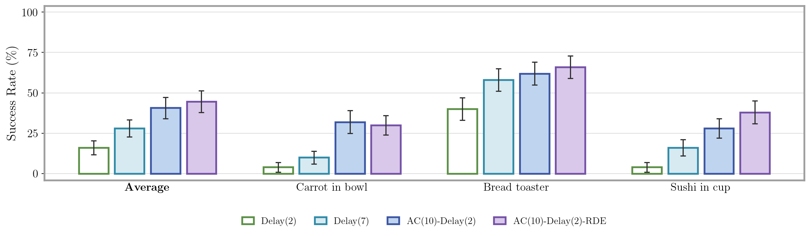
@article{lazzati2026chunking,
author = {Filippo Lazzati and Kyle Stachowicz and William Chen and Alberto Maria Metelli and Andrew Wagenmaker and Sergey Levine},
title = {Why Does Action Chunking Improve Behavioral Cloning Performance in Robotic Control?},
year = {2026},
}